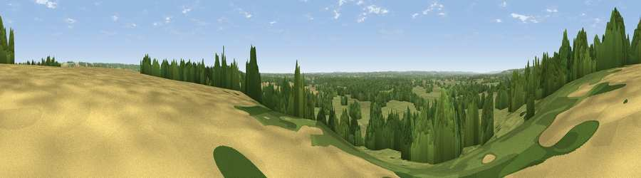

Viewpoint near Egerton
#28370 in England · top 38% of its area beats it · near EgertonWhere it is
The exact computed spot (TQ 90925 46825). Click the marker for map links.
The view, rendered

A 360° render of this exact spot computed from the terrain model, tree cover and land cover — summer colours, afternoon light, calibrated against photographs of famous viewpoints. Real trees, hedges and buildings will differ in detail.
The panorama
Grey silhouette: terrain skyline in each direction (720 bearings, Earth curvature and refraction included). Dashed green: skyline with trees (+15 m) and buildings (+8 m) as obstacles. Blue strip: how far the ground is visible on each bearing.
Where the view opens
Wedge length = distance to the farthest visible ground on that bearing (vegetation-aware). Rings at 10, 25 and 50 km.
What fills the view
63% grassland · 27% woodland · 9% cropland ·
Angular shares of the visible panorama (visual magnitude), not map area. Landscape diversity 0.39 (0–1 Shannon).
Key numbers
More beautiful places nearby
The staircase of upgrades: each row has a higher view potential than everything closer. Driving times are estimates from straight-line distance, calibrated against real road routing — check an actual route before setting out.
| Place | Direction | Drive | Score |
|---|---|---|---|
| Viewpoint near Boughton Malherbe | NNW · 3 km | ~7 min | 56.1 |
| Viewpoint near Charing | NE · 5 km | ~11 min | 68.6 |
| Viewpoint near Westwell | E · 7 km | ~15 min | 72.2 |
| Viewpoint near Lympne | SE · 22 km | ~37 min | 72.6 |
| Tolsford Hill | ESE · 26 km | ~42 min | 77.9 |
| Viewpoint near Capel-le-Ferne | ESE · 34 km | ~52 min | 80.2 |
| Viewpoint near Willingdon | SW · 56 km | ~77 min | 83.4 |
| Wilmington Hill | SW · 57 km | ~79 min | 85.4 |
51.18875, 0.73077 · source: screening · position refined by local search. Computed location — check access rights before visiting.